Philanthropy is more than charity — it is the love of others, an ethic and culture we are building together in Tuscaloosa.
Through our partnership with the Community Foundation of West Alabama, we bring thoughtful students and intentional business leaders together to pool their resources, energy, and ideas toward Tuscaloosa's greatest needs.
Every participant has a seat at the table — because your intellectual contribution to the conversation is just as valuable as your financial one. That's what it means to inspire philanthropy.
"Thank you, Zachary Goldman, for setting a great example for our young people. When we say our mission is to encourage charitable giving, we understand that applies to all ages."
Students, faculty, staff, and community leaders come together to hear directly from local nonprofit leaders about Tuscaloosa's most pressing needs. Every voice in the room matters.
Attendees contribute whatever they feel moved to give — any amount. Every gift is pooled through the Community Foundation of West Alabama and is fully tax-deductible.
Together, the community votes on which nonprofit receives the pooled funds. Your presence in the conversation is every bit as important as the size of your donation.
A literacy center, community bookstore, and afterschool program for middle schoolers — The House Tuscaloosa was our community's first choice. Their federal funding was frozen in early 2025, making this award especially timely.
Contributions made outside of a TP1K event serve as matching funds during our next gathering — and every dollar is always directed toward the greatest community need. Want a direct say in where your money goes? Join us at an event.
Bringing every voice to the table — because who we listen to matters as much as how much we give.
Philanthropy is more than just charity; it is the love of others — an ethic and culture we hope to instill in Tuscaloosa. Through our partnership with the Community Foundation of West Alabama, we aim to make philanthropy casual again by bringing thoughtful students and intentional business leaders together to pool their resources, energy, and ideas.
Tuscaloosa Premier 1,000 is a giving circle — a community of individuals invested in Tuscaloosa's growth, convened to discuss the city's most pressing needs and act together. We believe in inspiring philanthropy: every person has a seat at the table, because your intellectual contribution to the conversation is just as valuable as your financial one.
The "1,000" in our name isn't a dollar amount. It's a people goal: 1,000 individuals united in a shared commitment to this community — students, faculty, business owners, neighbors — anyone who cares about Tuscaloosa belongs here.
All donations to TP1K are processed through the Community Foundation of West Alabama — a four-star Charity Navigator–rated public charity serving West Alabama since 1999. Every gift is fully tax-deductible.
TP1K was born in the Randall Lab at UA’s Honors Hall — a place where, as Zach put it, “conversations always turn into actions.” Zach had grown up watching adults run giving circles with friends — small groups pooling money, debating causes, and deciding together where it would go. He wanted to bring that model to a campus that had never seen it.
To build it right, he and Raeed sought out the people who knew philanthropy at scale. They sat down with Bob Pierce, Vice President for Advancement, and Bobby Prince, Associate Vice President for Development — the leadership team behind the Rising Tide 2.0 campaign, the most successful higher education capital campaign in Alabama history, which surpassed its $1.8 billion goal fifteen months ahead of schedule.
With support from the Division of Community Affairs, Zach and Raeed presented TP1K on an “entrepreneurship panel” at the Division’s Board of Advisors annual meeting. Afterward, they sat with Dr. Samory T. Pruitt, Vice President for Community Affairs, to think through scaling. It was Dr. Pruitt who offered the reframe that became central to the mission: rather than treating “1,000” as a donation minimum, think of it as a people goal — 1,000 members united by a shared commitment to Tuscaloosa. No price of admission. Just shared purpose.
In Spring 2025, they launched. By 2026, Rylen Dempsey — a civic leader with deep community development experience — had joined as co-director, and the inaugural giving event had awarded $4,200 to The House Tuscaloosa. The long-term goal is a permanent community fund: growing deeper roots in Tuscaloosa before growing wider ones anywhere else. Every year, the community decides where the money goes.
“There isn’t really a student-led giving circle in Tuscaloosa, nor many philanthropic initiatives with this much flexibility. The donors themselves can vote and have a discourse with each other about where they want the money to go.”
Three University of Alabama students building a new model for community philanthropy in Tuscaloosa.
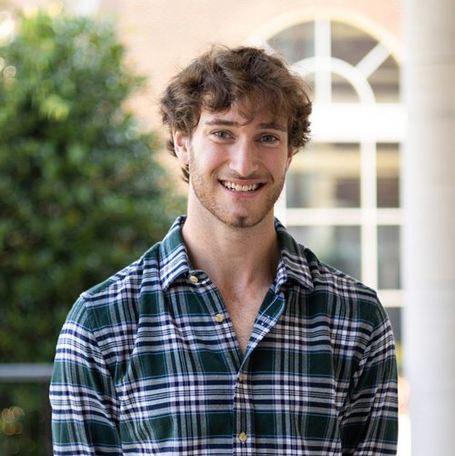
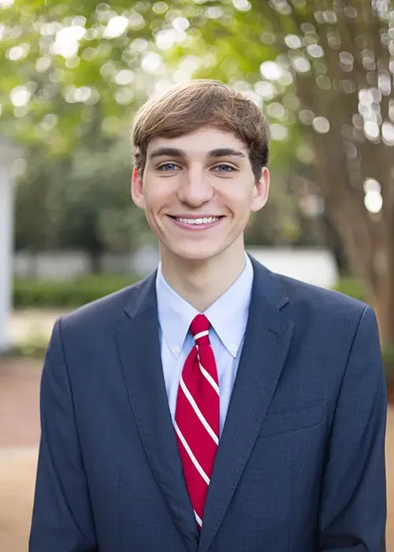
Contributions made outside of a TP1K event serve as matching funds during our next gathering — and every dollar is always directed toward the greatest community need. Want a direct say in where your money goes? Join us at an event.
Every dollar pooled by our community, directed by our community.
The House Tuscaloosa is a literacy center, community bookstore, and safe haven for young people. Founded six years ago, it has partnered with the Blackburn Institute on a middle and high school book club, participated in the annual Tuscaloosa City Schools "Battle of the Books," and developed a beloved afterschool program for middle schoolers.
When federal funding was frozen following an executive order in early 2025, The House faced an immediate gap. Our community voted to make them our first recipient — directing $4,200 toward sustaining their programs and keeping their doors open and accessible.
Literacy & Education Youth Programming Community AccessTP1K's grant recipients are chosen democratically by every attendee at our community giving events — students, faculty, business leaders, and neighbors alike. Future awards will be announced following each gathering. The community decides.
Contributions made outside of a TP1K event serve as matching funds during our next gathering — and every dollar is always directed toward the greatest community need. Want a direct say in where your money goes? Join us at an event.
Photos, press coverage, and stories from our growing circle of givers.
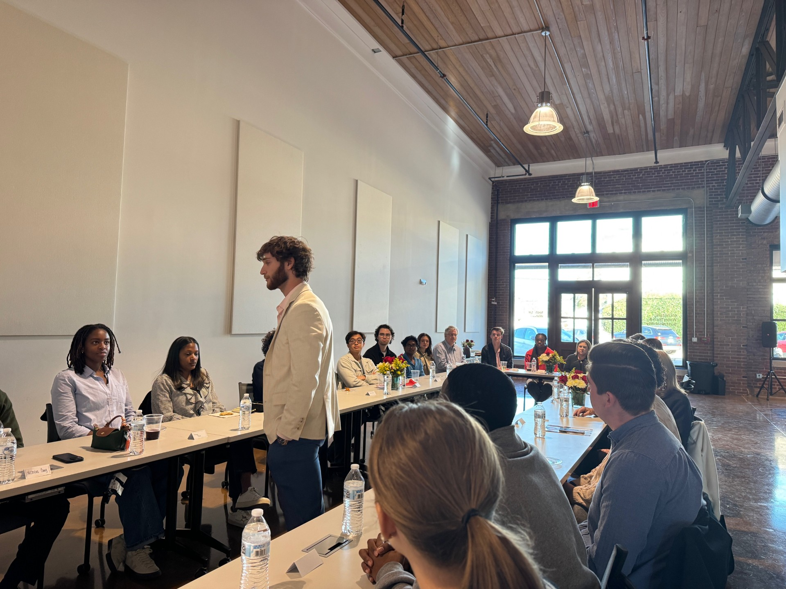
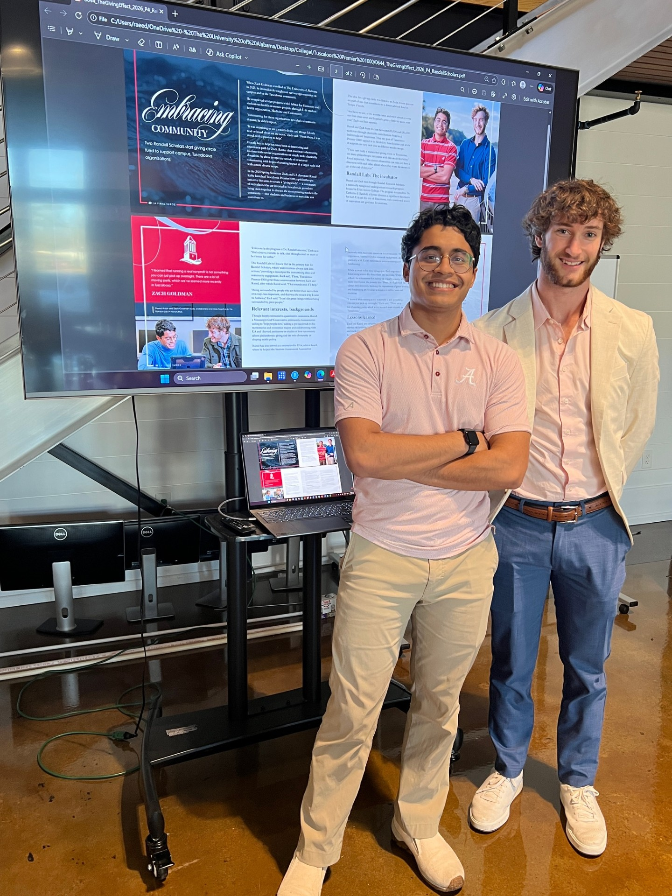
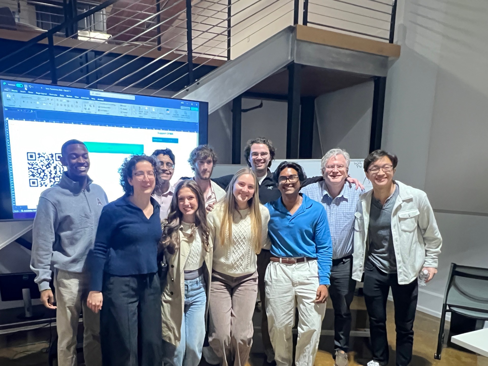
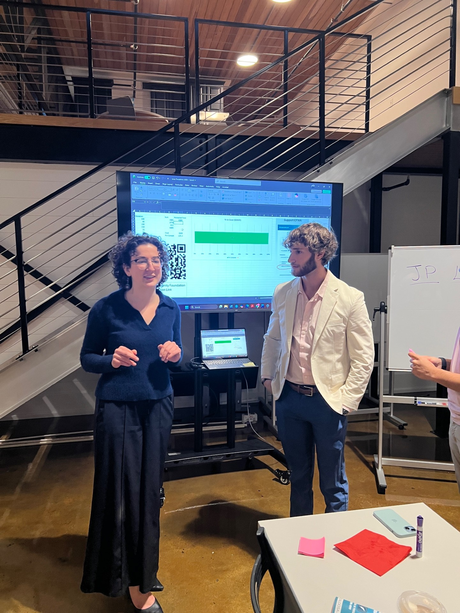
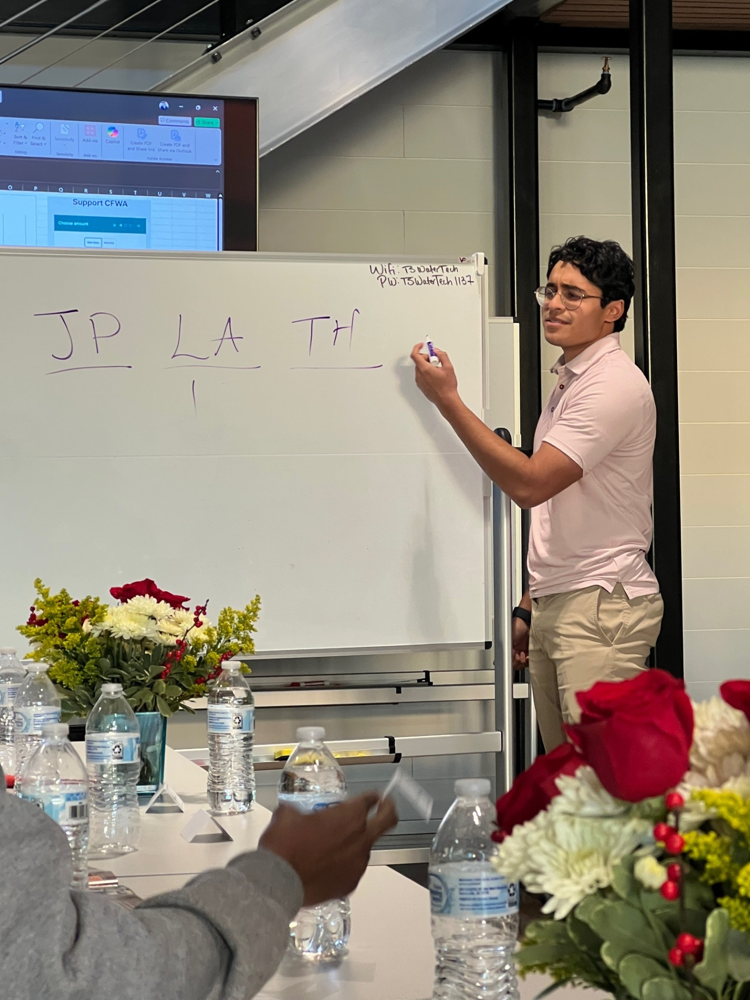
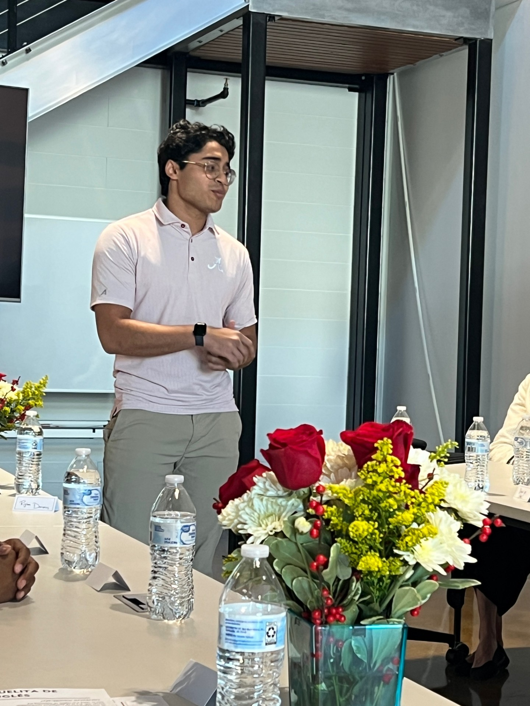
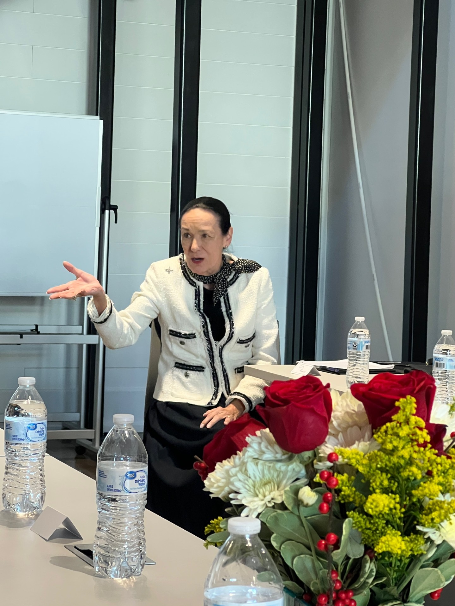
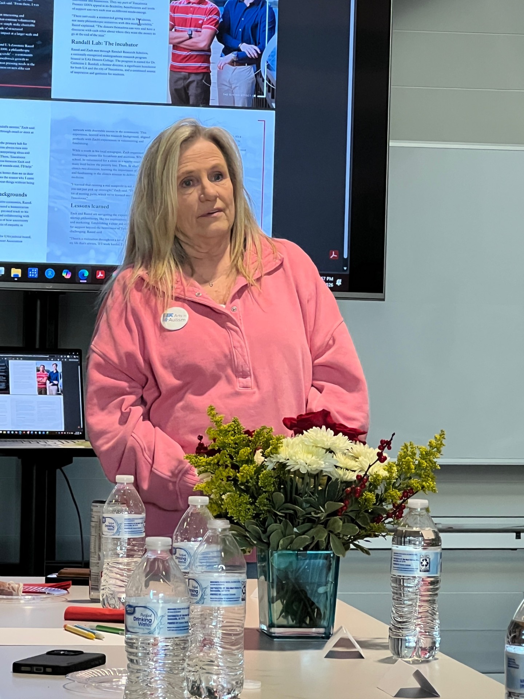
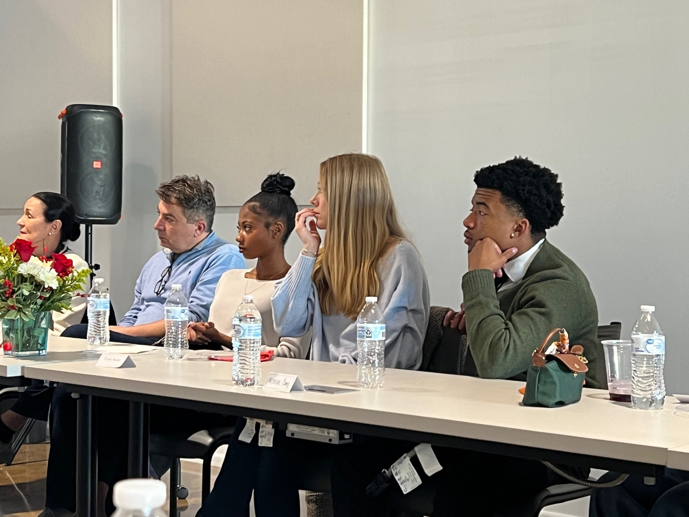
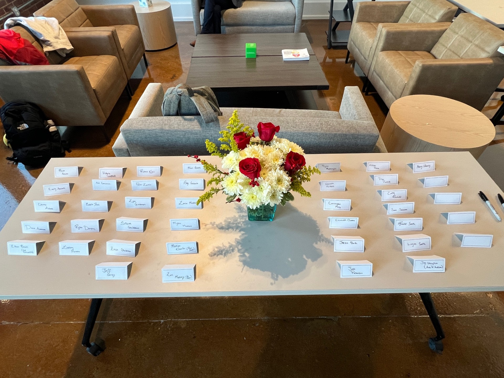
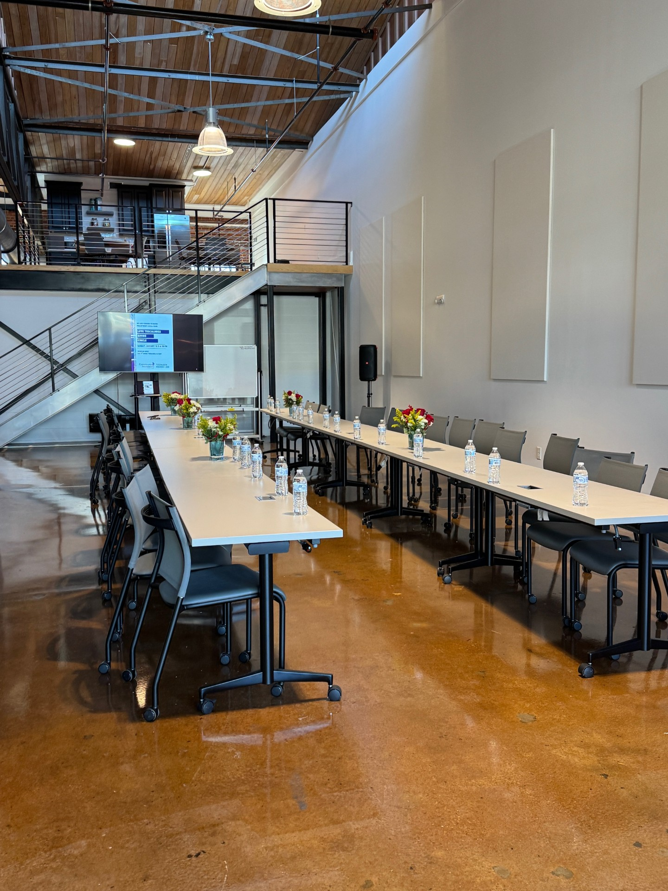
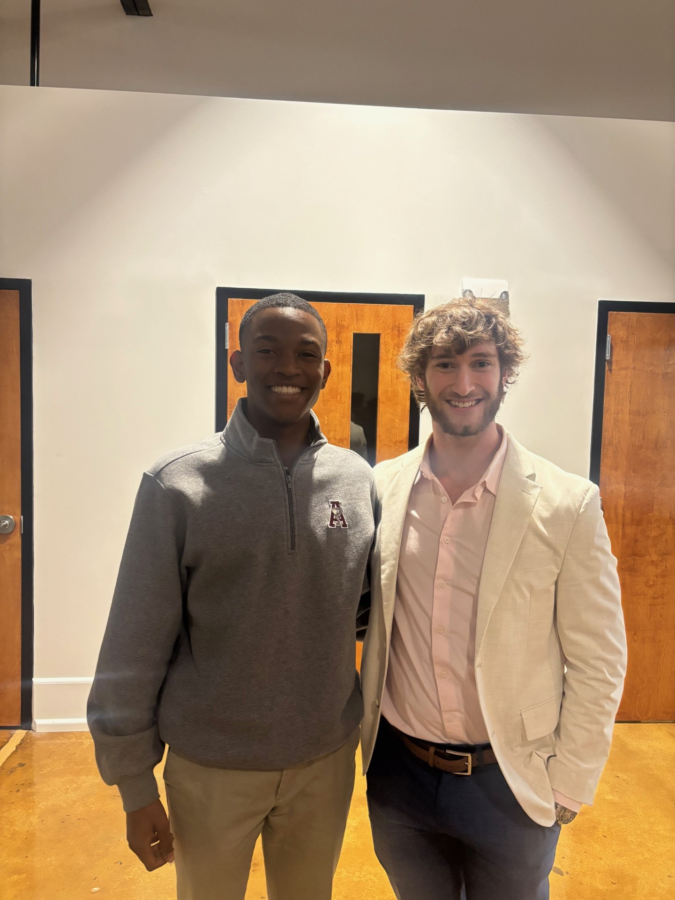
UA's student newspaper covered TP1K's inaugural community giving event and $4,200 award to The House Tuscaloosa — a literacy center and youth program whose federal funding was frozen in early 2025. Co-Director Zach Goldman spoke on impact over dollar amounts.
Read the ArticleUA's Department of Advancement featured TP1K in The Giving Effect, a publication distributed to 8,000 readers — tracing how a conversation in the Randall Lab became Tuscaloosa's first collegiate-led giving circle.
Read the FeatureCFWA President & CEO Glenn Taylor personally recognized Zach Goldman in the Foundation’s community newsletter, writing: “Thank you, Zachary Goldman, for setting a great example for our young people. When we say our mission is to encourage charitable giving, we understand that applies to all ages.”
Read the FeatureContributions made outside of a TP1K event serve as matching funds during our next gathering — and every dollar is always directed toward the greatest community need. Want a direct say in where your money goes? Join us at an event.
Everything you need to know about how TP1K works.
There's a place for you here — no matter what you bring to the table.
Are you a business, university department, or civic organization interested in partnering with TP1K to help shape Tuscaloosa's next generation of philanthropic leaders? We welcome co-sponsorship of events, mentorship of our student directors, donor matching, and other collaborative arrangements. Reach out to any of our co-directors to start the conversation — or connect with us through the Community Foundation of West Alabama.
TP1K isn't a membership organization with dues or tiers. It's a community of people who care about Tuscaloosa — and who believe that showing up, listening, and contributing what you can actually changes things. The conversation is the point. A dollar and a voice carry equal weight in the room.
We especially welcome first-time philanthropists and anyone who has ever thought “I wish I could do more.” You can — and you don’t need wealth or experience to start. Research shows the most consistent donors are people who gave for the first time when they were young. We are here to be that first step.
Attendance at our giving events is by personal invitation. We reach out to people whose work in the community we admire — because we want everyone at the table to know they were chosen to be there. If you haven’t received an invitation yet, join our mailing list. We’ll reach out when we think you’d be a great fit.
Contributions made through our website or outside of a live event are used as matching donations during our next gathering — amplifying the collective impact of the room. Every dollar is always directed toward the greatest need identified by our community. If you want a direct voice in where your contribution goes, we encourage you to reach out about attending an upcoming event and joining the conversation in person.
"This is a great opportunity for students who are active, involved, and passionate."
Fill out our short form to get on the TP1K mailing list. We’ll be in touch about upcoming events, grant cycles, and ways to get involved.
Join the Circle →You’ll be taken to a short Google Form. We’ll only reach out about TP1K updates — never spam.
Contributions made outside of a TP1K event serve as matching funds during our next gathering — and every dollar is always directed toward the greatest community need. Want a direct say in where your money goes? Join us at an event.